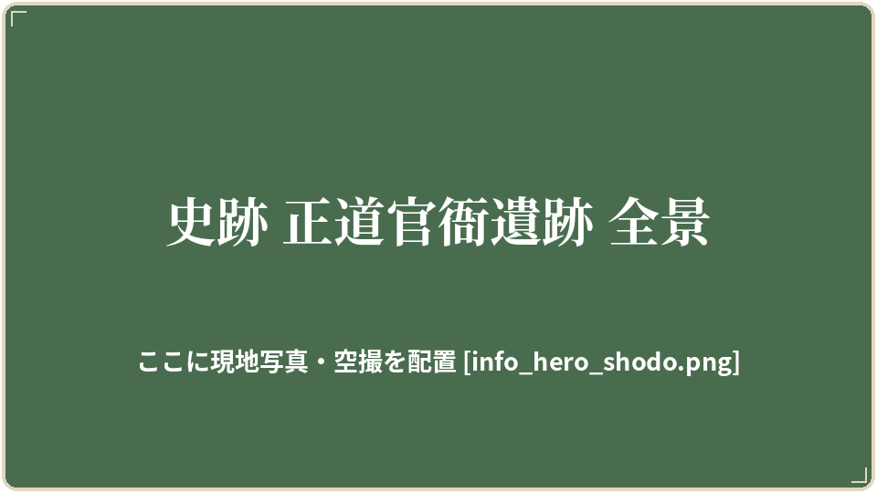

正道官衙遺跡（しょうどうかんがいせき）は、京都府城陽市寺田正道に位置する国指定史跡です。古墳時代（5世紀）の小規模古墳、6世紀後半〜7世紀の集落跡、そして7世紀以降の大型掘立柱建物群による官衙遺構が重なり合う複合遺跡です。
発掘調査の結果、奈良時代の山背国（山城国）久世郡の郡衙（郡役所）の中心部と推定されており、昭和49年（1974年）9月に国の史跡に指定されました。
南辺を築地塀と「南門」で区画し、その内側に庇をもつ最大の中心建物「庁屋」、後方に「副屋」、前庭の東西に「東屋」と「向屋」が計画的に配置されていました。現在も一部が史跡公園として整備されています。